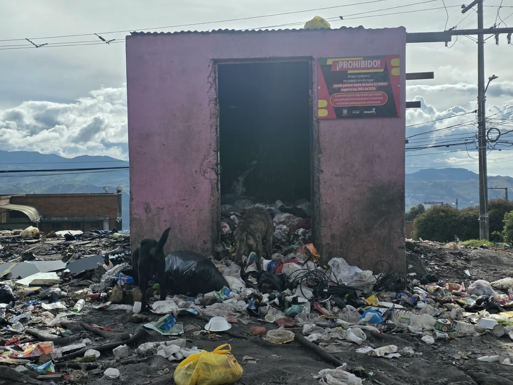
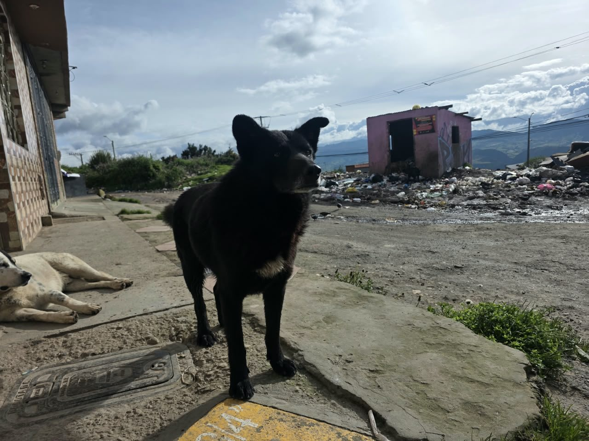

Transformación de residuos orgánicos sin electricidad
Menos relleno, más vida.
Ricardo Beltrán · William Fonseca · Samuel Medina · Faber Ortiz · Camila Riaño Proceso Administrativo · Politécnico Grancolombiano · Gran final 2026-2
Flecha derecha, espacio o clic para avanzar
01El problema
Cada cuadro: 10 toneladasComida
Cada día, Colombia entierra
0
toneladas de basura
Solo 1 de cada 5 se aprovecha.
0%
es comida.
Solo a Doña Juana, en Bogotá, llegan
0t/día
2026hoy
2029vence la licencia
Y hay 135 puntos críticos de ratas en la ciudad.
Decreto 0772 de 2026
Separar los orgánicos ya es obligatorio.
Pero en la cocina no hay una forma fácil y limpia de hacerlo.
Blanca aprovechablesNegra no aprovechablesVerde orgánicos
Superservicios, Informe Nacional de Disposición Final 2024 · Secretaría del Hábitat de Bogotá.
UAESP y Alcaldía de Bogotá, 1.er trimestre de 2026 · El Tiempo, 16-oct-2026 (licencia prorrogada por la CAR) · Semana, 17-mar-2026.
Decreto 0772 de 2026, Ministerio de Vivienda (16-jul-2026) · Resolución 2184 de 2019 (código de colores).
02El otro problema
A pocos kilómetros, el campo paga caro el abono.
Bulto de urea de 50 kg, el abono químico más usado.
>94%
del fertilizante del país es importado.
40%
de la tierra agrícola está degradada.
$80.000
Enero 2021
$230.000
Enero 2022
0 %
$153.300 – $222.400
Agosto 2026guerra en Irán y cierre de Ormuz
La ciudad entierra la comida que el campo necesita.
DANE-SIPSA vía U.S. Trade.gov (2021-2022) · DANE vía El Tiempo (agosto de 2026, según el municipio) · El Colombiano, 7-abr-2026.
El Colombiano (7-abr-2026) · Agronegocios y CONtexto Ganadero (Asocompost): 2,8 millones de hectáreas.
03Trabajo de campo
Fuimos al barrio de nuestro compañero Samuel.
Villa Rosita, Usme · Bogotá19 de septiembre de 2026Conversaciones con vecinos y observación en la calle

El shut, desbordado pese al aviso de multaUn perro come de un icopor tiradoCáscaras botadas en la ladera

Perros y recicladores rompen las bolsas
Lo que nos dijeron los vecinos
0%
señala el shut de la esquina como el foco del problema
0%
habla de perros, ratas o plagas
0%
mezcla todo en la misma bolsa
0%
conecta los residuos con el abono
«Las cáscaras de la papa, el cartón, las cáscaras de huevo… todo es un revoltijo.»Vecina de Villa Rosita, Usme
Nadie rechazó la idea.
Lo que falta es una forma fácil.
Estudio cualitativo exploratorio del equipo RECOEVO: entrevistas semiestructuradas y observación, 220 frases analizadas con Framework Method · Villa Rosita, Usme, 19-sep-2026.
04La solución
Un triturador de cocina que funciona con el pie.
Sin electricidadSin olor32 × 34 × 52 cm · ≈ 5 kg
1
Echa.
Las cáscaras entran por la tapa.
Boca de 12 × 10 cmTapa abierta: el pedal se bloquea
2
Pisa.
≈ 11 pisadas al día: unos 20 segundos.
Pedal → cremallera → piñón13 cuchillas de acero templadoTiras de ≈ 5 mm
3
Sin olor.
Filtro de carbón activado en la tapa.
60 g · dura 6 mesesVálvula de una vía: no entran moscas
4
Entrega.
Una bolsa cerrada por semana, lista para la ruta de orgánicos.
Balde de 10 LCualquier bolsa compostablePuerta con seguro para niños
18 piezas. Cero cables.
Hecho para fabricarse en Colombia, con 70 % de plástico reciclado en el cuerpo.
1 · Echa2 · Pisa3 · Sin olor4 · Entrega
04Por qué RECOEVO
0kWh
Funciona aunque se vaya la luz.
Sin enchufe, sin baterías, sin factura. Si sube la tarifa o llega un racionamiento, RECOEVO sigue funcionando.
Lo que cuesta una buena caneca.
Caneca con pedal 20 Lsolo guarda
$119.900
RECOEVOtritura, sin luz
$199.900
FoodCyclereléctrico, importado
$1.265.000
Lomi 3eléctrico, importado
$1.737.000
En 5 años, un hogar se ahorra ≈ $2.745.100 frente a un triturador eléctrico: compra, energía y filtros (estimado).
Precios con IVA: Homecenter, Best Buy y lomi.com (oct-2026); dólares a TRM $3.163,76 del 21-oct-2026 · Ahorro: plan RECOEVO, hoja 9.
05Lo que esperamos lograr
UsmeBogotáColombia
Bogotá tiene
0millones
de hogares
En 10 años, la meta:
0
hogares con RECOEVO
Es como 1 de cada 4 hogares de Bogotá.
Así dejan de llegar al relleno
0t
de comida en 10 años
= lo que recibe Doña Juana en 2 meses.
Cada punto: 10.000 hogares de Bogotá● Hogares con RECOEVO
Lo que recibe Doña Juana en 10 años: cada cuadro es un mes
≈ 203.491 t de CO₂e evitadas (estimado)34 empleos formales≈ 720 t de plástico reciclado
Hogares de Bogotá: Encuesta Multipropósito 2025 (DANE) · Meta: plan RECOEVO a 10 años, escenario realista.
Calculado con 0,46 kg de restos por hogar al día (la UAESP registra ≈ 1,2 kg: el impacto real podría ser mayor) y 85 % de uso · Doña Juana: ≈ 6.800 t/día.
06Objetivos de Desarrollo Sostenible
Más que un negocio: un propósito.
12
Producción y consumo responsables
Saca la comida de la bolsa de basura y la deja lista para volver a la tierra.
Metas 12.3 y 12.5
11
Ciudades y comunidades sostenibles
Menos bolsas rotas en las esquinas, menos ratas y menos carga para Doña Juana.
Meta 11.6
13
Acción por el clima
La comida enterrada suelta metano, ≈ 80 veces más potente que el CO₂ en 20 años. Sin comida en el relleno, no hay metano.
≈ 203.491 t de CO₂e evitadas
Naciones Unidas, Agenda 2030 · Metano: El Tiempo, 16-oct-2026 (con datos de Greenpeace) · CO₂e: plan RECOEVO, estimado con 0,5 t por tonelada.
07Modelo de negocio
Ganamos vendiendo el producto.
B2C
Hogares
$199.900 con IVA
Marketplaces, tienda en línea y grandes superficies. En 12 cuotas de $16.658.
B2B · B2G
Empresas, conjuntos y alcaldías
$142.000 + IVA
Por producto, en lotes de 100 o más: 15 % menos. El decreto también los obliga a separar.
Servicio
Taller de separación
$8.000 + IVA
Por producto, con cada lote: para que sus hogares separen bien.
Cuatro canales de venta
0productos en el año 3
35 %
Marketplaces
Mercado Libre y Falabella.com: llegan a todo el país (comisión ≈ 14 %).
35 %
Lotes B2B y B2G
Empresas, conjuntos y alcaldías: cientos de productos a la vez.
15 %
Tienda en línea y WhatsApp
Sin intermediario. El envío lo paga el cliente (Bogotá $14.900).
15 %
Grandes superficies
Homecenter, Éxito, Alkosto: se quedan ≈ 40 % del precio.
Plan RECOEVO, escenario realista: Canvas y hoja 9 (ventas y marketing) · Comisiones: informe B7, noviembre de 2026.
08Las cifras · plan a 10 años
Inversión inicial
$0M
$3.147 MFábrica: máquinas, moldes y planta
$484 MArranque
$2.323 MRespaldo de caja, que vuelve
Lo ponen los socios ($4.880 M) y un crédito ($1.074 M).
Cada producto deja libre el
0%
para pagar los costos fijos
Punto de equilibrio
0 productos al mes
Lo superamos en el mes 17.
Recuperamos la inversión en el
Mes 0
4 años y 2 meses
En 10 años
La curva muestra el dinero que deja el negocio, sumado mes a mes, ya descontada la inversión.
$0 M
Utilidad neta en 10 años
ya pagados costos e impuestos
0 %
Retorno de la inversión (ROI)
$30.508 M ÷ $5.954 M
0 %
TIR
lo que rinde al año el dinero invertido
Escenario realista del plan financiero y presupuesto ejecutivo a 10 años · M = millones de pesos · Curva: dinero libre del negocio sumado mes a mes.
Gracias
Menos relleno, más vida.
Siguiente paso: la preserie y las primeras preventas. Nos encantaría su mentoría para llegar ahí.
Ricardo Beltrán · William Fonseca · Samuel Medina · Faber Ortiz · Camila Riaño Docente: Ingrid Zoraida Sandoval Pérez · Proceso Administrativo · Politécnico Grancolombiano
Todo el proyecto: prototipo 3D, videos, estudio de campo y presupuesto
Esc para cerrar · cifras del escenario realista del plan RECOEVO y de sus fuentes
Preguntas del jurado
Respuestas listas, por tema
Toque un tema para ver sus preguntas; toque una pregunta para ver la explicación y de dónde sale cada cifra.